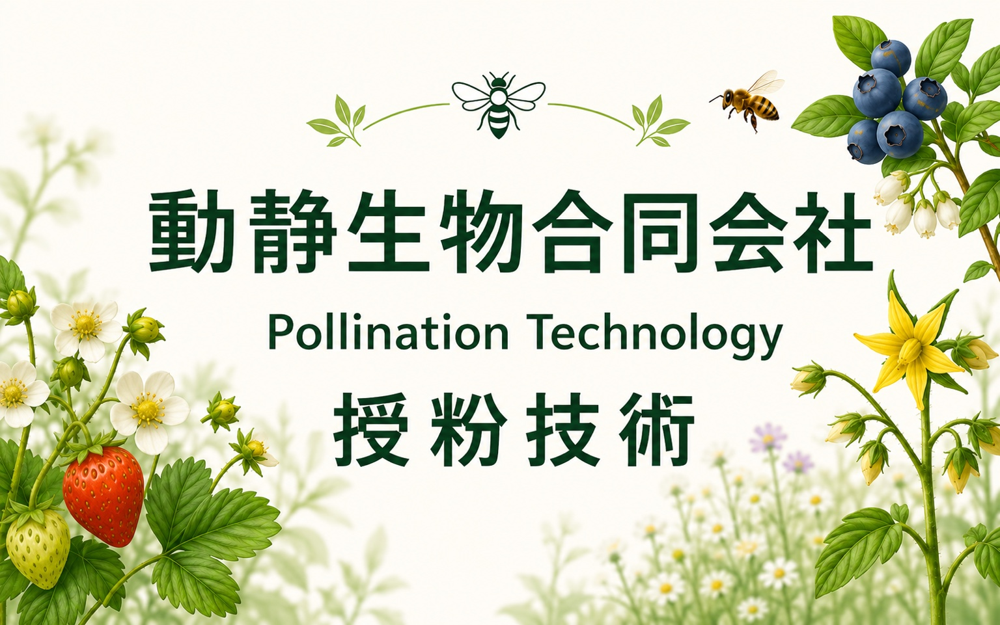
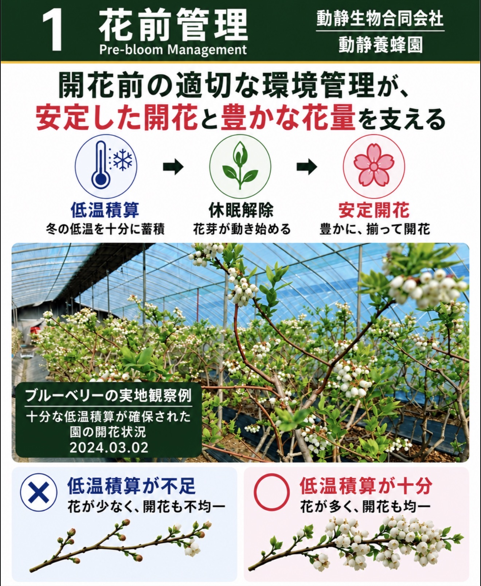
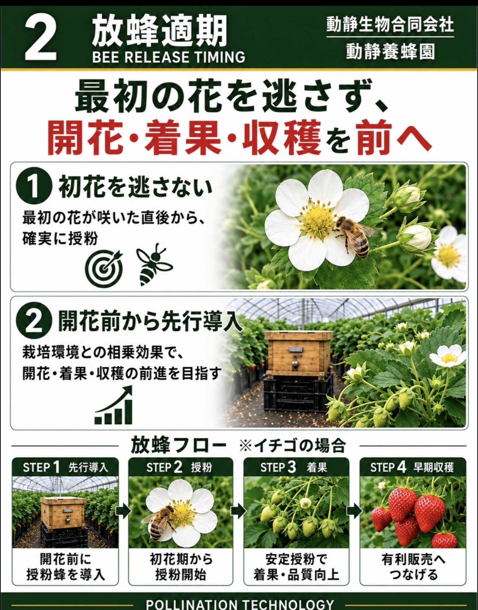
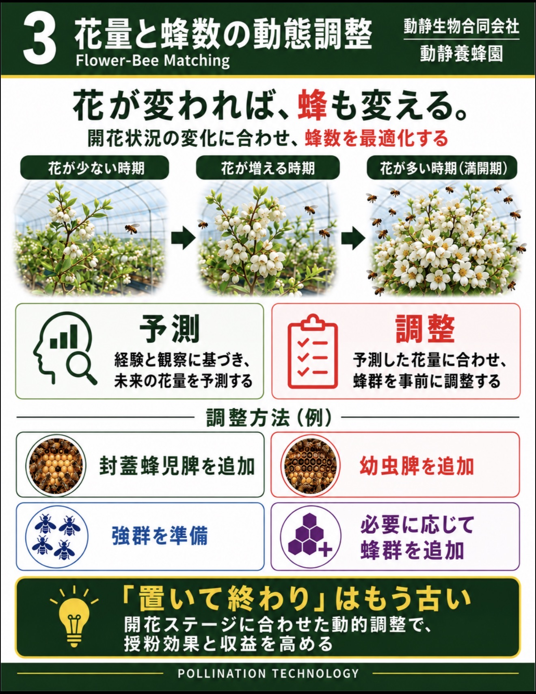
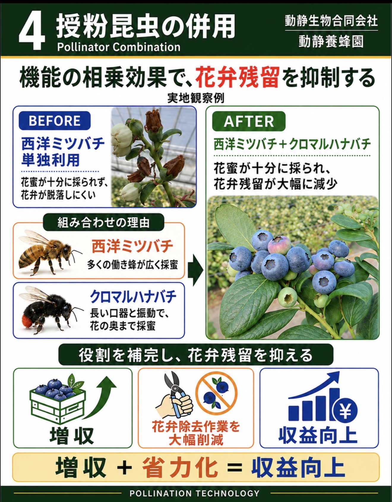
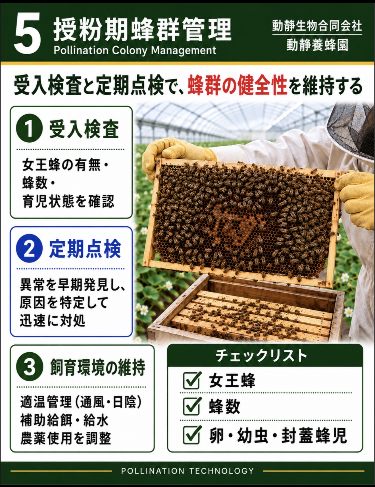
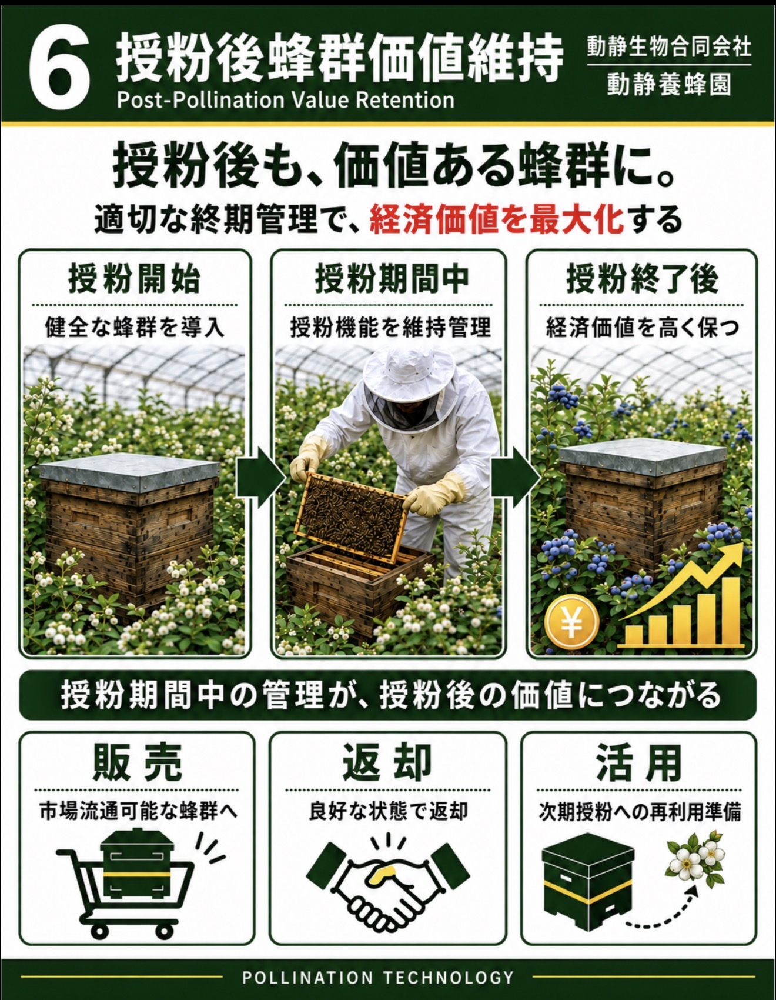

事前調査と設計
作物・花期・花量・栽培環境から、導入時期と必要な蜂群を設計します。

Integrated Pollination Technology
花の状態、放蜂時期、花量と蜂数、授粉昆虫の組み合わせ、授粉期間中の蜂群管理、授粉後の蜂群価値維持までを一体で考えます。以下は、当社が受粉サービスで重視する主要な6つの工程です。
Six Core Practices
展板は日本語で表示しています。図と写真から各工程の関係を確認できます。






Our Service
作物、栽培面積、花期、施設・露地の条件を確認し、適した蜂種と管理方法を組み立てます。
作物・花期・花量・栽培環境から、導入時期と必要な蜂群を設計します。
西洋ミツバチとクロマルハナバチを活用し、期間中の蜂群を継続管理します。
受粉状況を確認し、終了後は蜂群を回収して価値を維持し、次の利用につなげます。
Consultation
条件を確認し、適した受粉方法と個別見積りをご案内します。
Company